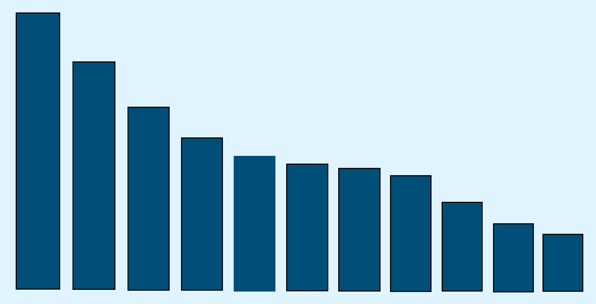
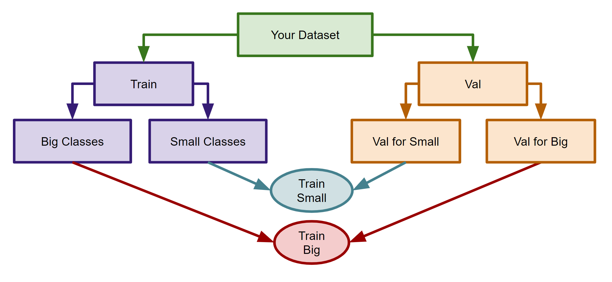

Handling class imbalanced training datasets

by Devashish Prasad -
September 8, 2021
Introduction
In this blog, I will be sharing my experience in handling class imbalance for machine
learning training datasets. This is just a word of advice, and I will try to update this
blog with more information as I learn more about the topic. If I encounter a dataset
having class imbalance, I first prepare a common test set out of my dataset and
try out various methods to solve the problem. I evaluate the performance of all these
methods on the test set and use the one that performs the best. The following
should be a good starting point for you. There might be many other ways that you should
consider to handle class imbalance. Please comment on this blog if you have any
suggestions.
I am aware of two broad categories of techniques. The first type of technique plays with
the loss function to solve the problem. On the other hand, the second type of technique
directly the problem by changing the data distribution itself. I have mostly used the
first type of technique. It is because I have been working with large datasets. The
first type of technique is more efficient than the second type in terms of saving
training time and attaining good accuracy.
I have used the following methods to handle the imbalanced datasets in the past. -
Modifying Loss functions
These types of techniques can be used easily when the dataset is large.
1. Weighted cross-entropy loss
We can assign weights to the cross-entropy loss such that it will penalize more to the
smaller classes and the less to larger classes. Many frameworks have a very easy way to
do this.
In Scikit-learn we can look out for class_weight parameter. For eg -
random forest
Here is how we can use this in loss functions in Pytorch.
Here is how we can use this in Keras.
2. Focal loss
Originally proposed for object detection, but we can also use this for any other use
case. This
article
succinctly explains the whole idea.
Here is
how you can use this in Pytorch for multi-class classification.
Here is how you can
use this in Keras.
Over Sampling and Under Sampling techniques
These techniques directly modify the data distribution and make the dataset balanced.
The problem with these techniques is that they are not efficient with large datasets.
If you do over-sampling, you will have to train the model on a much bigger dataset. It
will increase training time by a lot (making it infeasible to train). If you do
under-sampling, you will have to train the model on a small subset of the dataset.
It will result in the loss of valuable training information, and I try never to use
undersampling.
There are so many techniques in this, check out
imblearn
a dedicated library built only to deal with imbalanced datasets. It gives you a simple
scikit-learn type API to quickly implement various methods. You might have heard of
SMOTE and ADASYN, and many more can be used very easily using this library.
Create a separate model for small classes
In my experience, this technique is not straightforward to implement. You need to modify training
and testing pipelines if they are already complicated. But, still, you might want to
consider it. So, if you have some classes that have very small number of instances, you
can consider creating a separate classifier for these small classes (called
small_classifier for eg). You can group these small classes under a single class
(called small_class for eg) so that your main classifier will classify small_class with
all other big classes in the dataset. And if your main classifier encounters any
instance of small_class, it will pass it to small_classifier, which will predict the
actual class for the small_class instance. This technique can give you accuracy boosts
are now the main classifier does not need to deal with the small number of classes, and
instead, small_classifier will be looking just at these small classes. The following
image shows this technique (for training).

Thank you for reading! Please comment your thoughts below